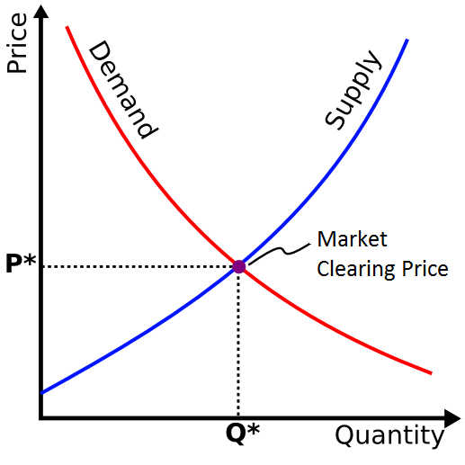
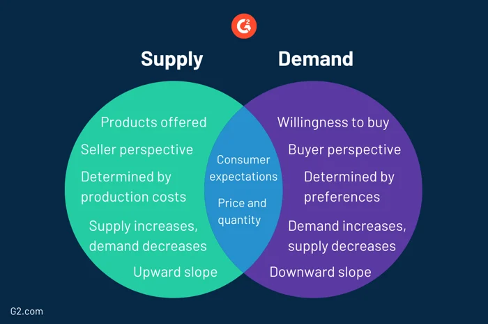
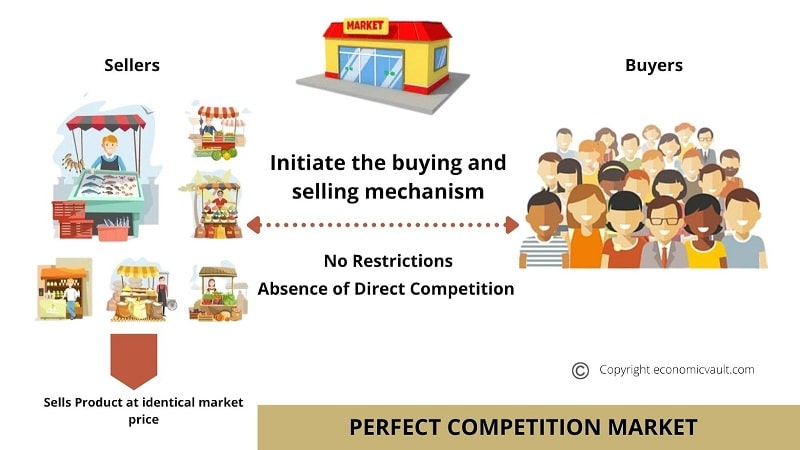
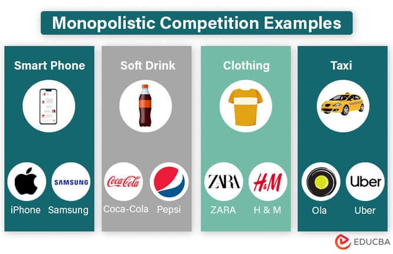
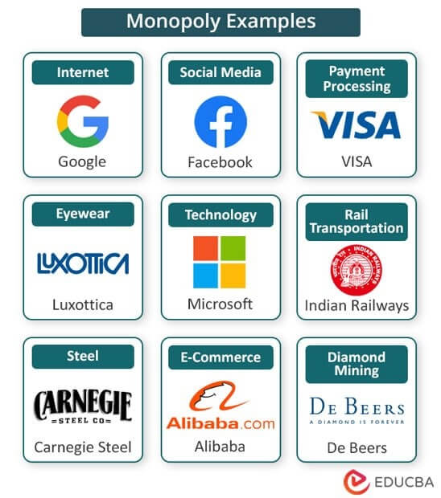
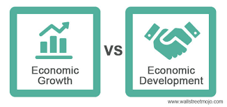

ECONOMICS & COMPUTER SCIENCE
Introduction to Economics
Economics aims to explain the economic behavior of both individuals and groups, as well as their interactions within and between societies.
At its core, economics delves into the decision-making processes of individuals who face limited resources, such as time, money, and natural resources. These constraints prompt constant choices regarding purchases, production, consumption, and allocation of resources. Economics scrutinizes these behaviors.
By focusing on scarcity and its effects on resource utilization, production of goods and services, long-term growth, welfare, and various other intricate societal matters, economics addresses critical concerns of society.
Supply and Demand
Supply and demand are one of the most fundamental concepts in economics as they explain the relationship between the quantity of a product or a commodity producers are willing to sell and the quantity consumers are willing to buy at different price levels. The intersection of supply and demand establishes the equilibrium price, representing the agreed-upon market price where the quantity supplied equals the quantity demanded. In a free market, the price mechanism plays an important role in balancing supply and demand. When consumers demand more than what is available at the current price (excess demand), the prices of the products rise, further motivating producers to increase the supply of the product. Conversely, if consumers demand less than what is available (excess supply), prices fall, leading to reduced production.
The price mechanism shapes how resources are distributed in the economy, and it determines what goods or services are produced, how they are produced, and who receives them. Market equilibrium is achieved as prices adjust to meet demand and supply without any tendency for further price changes, unless external factors intervene (the pandemic or the Russia-Ukraine war, for example).
The responsiveness of quantity demanded or supplied to price changes is measured by the price elasticity of supply and demand. According to the theory of elastic demand, demand can change significantly with even a small change in price because consumers are sensitive to price changes. Inelastic demand implies that consumers are less sensitive to price changes, resulting in relatively stable demand regardless of price changes. Numerous factors influence demand and supply elasticity, including the availability of substitutes, the proportion of income spent on the product, and the time horizon considered. Products with readily available substitutes tend to have more elastic demand, as consumers can easily switch to alternatives if prices rise.


Market Structures
Market structure in economics shows how different industries are classified and differentiated based on the extent and nature of competition they experience in the market for goods and services. This concept involves a comprehensive analysis of specific characteristics that significantly influence the behavior and performance of companies operating within a particular market. The assessment of market structure takes into account various factors that shape the dynamics of the market. These factors include the number of buyers and sellers participating in the market, the bargaining power they possess, the degree of market concentration, the level of differentiation among products offered, and the ease with which firms can enter or exit the market.
In order to understand market structures thoroughly, economists closely examine an array of features exhibited by different players operating within a specific market. By analyzing and comparing these features, economists can effectively categorize and differentiate companies across related industries, leading to a clearer understanding of market structures. The primary types of market structures commonly identified are perfect competition, monopolistic competition, oligopoly, and monopoly.
Perfect Competition
Perfect competition is a market where there are numerous small firms competing against each other by offering identical products. In this scenario, companies have no control over the prices of goods and services they sell, and entry into the market is relatively easy. The agricultural market is a great example of a perfectly competitive market, where numerous small farmers sell identical products without the ability to influence prices. Prices are solely determined by market demand and supply forces.

Monopolistic Competition

Monopolistic competition combines elements of both monopoly and perfect competition. In this type of market, firms compete by differentiating their products to make them distinct from those of their competitors. While firms can influence prices to some extent, there is also a significant degree of freedom for companies to enter or exit the market. For instance, fast-food restaurants offer similar but slightly differentiated products and services. Each restaurant has its unique branding and menu, attracting customers based on their preferences. Restaurants have some control over prices, and consumers are willing to pay slightly different prices for perceived differences in quality and experience. Low barriers to entry allow new restaurants to enter the market, fostering competition and innovation. While there is some price differentiation, the market is not perfectly competitive, and product differentiation plays a significant role in attracting customers.
Oligopoly
An oligopoly market is distinguished by the presence of a small number of large firms, which may offer either identical or differentiated products. Given the limited number of players in the market, the strategies of these firms are often interdependent, leading to complex interactions and strategic planning. Price changes or other strategic moves by one firm are closely observed and may elicit responses from the other firms in the market. In the smartphone industry, an oligopoly market exists with a few dominant companies like Apple, Samsung, and Huawei. These companies sell differentiated products and closely monitor and respond to each other's actions. Price changes and innovations by one company influence competitors' strategies.
Monopoly

A monopoly market, on the other hand, is characterized by the dominance of a single company that holds exclusive control over the entire industry. The monopolistic firm has no direct competitors and enjoys significant market power, allowing it to set prices and dictate the supply of goods and services. Entry into such a market is extremely challenging, often due to barriers like exclusive resource ownership, patents, licenses, or substantial initial setup costs. A monopoly market example is a government-granted utility company that is the sole provider of electricity in a specific region. Consumers have no other electricity options, and the monopoly company has significant market power, setting prices without direct competition. Barriers to entry prevent other companies from competing, and government regulation is necessary to ensure fair pricing and quality of service for consumers.
Understanding market structures and their implications is crucial for policymakers, businesses, and economists as it helps in analyzing market behavior, determining the level of competition, and devising appropriate regulatory measures to ensure efficient and fair market outcomes.
Economic Growth & Development

Economic growth and economic development are both crucial for a country's economic sustainability. Economic growth refers to an increase in the total output of goods and services produced in a country's economy over time. While growth is generally positive as it indicates increased production, it does not necessarily guarantee an improvement in overall quality of life or economic welfare. This is where economic development comes into play. Economic development goes beyond the concept of growth and assesses the quality of the output, considering factors like living standards, access to healthcare, and education. It takes into account both quantitative and qualitative measures to evaluate economic welfare and overall happiness in the economy.
Investment in capital goods and technology, education, and healthcare are essential factors that impact growth and development positively. However, barriers like corruption, institutional factors, inadequate infrastructure, and lack of human and physical capital can hinder sustainable growth and development.
To promote economic growth and development, policymakers employ various micro and macroeconomic policies, such as fiscal policy, monetary policy, and supply-side policies. It is essential to choose policies that ensure sustainability, consider environmental concerns, and address market failures caused by growth.
Achieving economic growth and development requires careful consideration of trade-offs and the selection of effective policies that lead to sustainable progress.
Connection to Computer Science
Computer science and economics are closely related fields, and advancements in one often have significant implications for the other. Here are some ways in which computer science intersects with economics:
Computational Economics: Computational economics is a subfield of economics that utilizes computer algorithms, simulations, and computational models to analyze economic systems and solve complex economic problems. Computer scientists play a crucial role in developing and implementing these computational tools, which help economists study market behaviors, predict economic outcomes, and evaluate policy impacts.
Big Data and Economic Analysis: With the advent of big data, there has been an explosion of data available for economic analysis. Computer scientists and data analysts collaborate with economists to process, analyze, and draw insights from vast datasets, enabling policymakers and businesses to make data-driven decisions.
Artificial Intelligence and Machine Learning: Artificial intelligence (AI) and machine learning (ML) have applications in various economic domains. They are used to develop predictive models, automate data analysis, and optimize decision-making processes in finance, investment, marketing, and supply chain management. For example, AI-powered trading algorithms can make investment decisions based on market trends and economic indicators.
Algorithmic Trading: In financial markets, computer algorithms drive a significant portion of trading activities. High-frequency trading (HFT) and algorithmic trading strategies heavily rely on computer science principles to analyze market data, execute trades, and manage risk in real-time.
Economic Policy Simulation: Computer simulations are used to model and predict the effects of different economic policies. These simulations allow policymakers to understand how specific changes in tax rates, interest rates, or regulations may impact the economy in the short and long term. This information helps in designing more effective and well-informed economic policies.
Cryptoeconomics and Blockchain: Cryptoeconomics is a new field that explores the economic principles underlying blockchain technologies and cryptocurrencies. It combines elements of game theory, mechanism design, and distributed systems. Computer scientists are instrumental in developing and securing blockchain networks, while economists study the economic incentives and mechanisms that govern decentralized systems.
Computer science has brought significant advancements to economics, but its integration also presents some challenges. One crucial benefit is the emergence of computational economics, which utilizes algorithms and simulations to analyze complex economic systems, enabling more accurate predictions and policy analysis. However, economists must guard against overreliance on models, as it might overlook real-world data and empirical evidence. Data privacy and security concerns are pertinent, given the vast amounts of sensitive data collected for economic analysis. Algorithmic bias is another critical issue, as biased training data can lead to unfair outcomes and perpetuate inequalities. Additionally, automation and algorithms may lead to job displacement in certain sectors. It is vital to address the complexity and inaccessibility of advanced computer models to ensure transparency and public understanding. While computer science offers immense potential for economics, careful consideration of ethical and societal implications is necessary to maximize its benefits while minimizing potential drawbacks.
Overall, the integration of computer science and economics has led to significant advancements in economic analysis, policy formulation, financial decision-making, and market efficiency. As technology continues to evolve, the collaboration between these two fields will continue to shape the way we understand and interact with economic systems
Conclusion
The convergence of computer science and economics has led to profound transformations in the field of economics, expanding its horizons and capabilities in unprecedented ways. Through the utilization of advanced computing technologies and data analytics, economists can now delve deeper into complex economic phenomena, unraveling intricate patterns and relationships that were once beyond reach. With the advent of powerful algorithms and computational models, economists can simulate and predict the behavior of economies under various scenarios, enabling more accurate forecasting and policy analysis.
Sources
Relationship between Computer Science and Economics. EDUInput. (2023, May 4). https://eduinput.com/relationship-between-computer-science-and-economics/#:~:text=Computer%20science%20and%20economics%20are%20becoming%20more%20connected%20because%20of,%2C%20save%20money%2C%20and%20grow.&text=One%20of%20the%20most%20significant,economics%20is%20through%20data%20analytics.
Growth and development. (n.d.). StudySmarter UK. https://www.studysmarter.co.uk/explanations/macroeconomics/economic-performance/growth-and-development/
Introduction to Economics. (n.d.). StudySmarter UK. https://www.studysmarter.co.uk/explanations/microeconomics/economic-principles/introduction-to-economics/#:~:text=Economics%20is%20the%20study%20of,whom%2C%20and%20what%20to%20consume.
Team, C. (2023). Market structure. Corporate Finance Institute. https://corporatefinanceinstitute.com/resources/economics/market-structure/
The Editors of Encyclopaedia Britannica. (2023, July 13). Supply and demand | Definition, Example, & Graph. Encyclopedia Britannica. https://www.britannica.com/money/topic/supply-and-demand